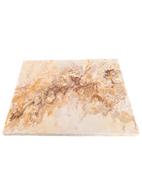

Mascotas
📌 Amo las mascotas y tengo dos hijas perrunas, Ashley y Leia

Bogotá - Colombia 🌎
📧 yessicasta@gmail.com
tengo 39 años
Me apasionan los retos de razonamiento, soy una persona con capacidad de análisis, se me facilita el relacionamiento con la gente, el trabajo en equipo, la resolución de problemas y me encanta aprender constantemente.
Ingeniera de sistemas 🎓
Conocimientos en java, Python, Html, CSS, JavaScript, Flask, React, Node, GIT y metodologías ágiles como SCRUM.
Actualmente en formación en el bootcamp JAVASCRIPT FULL-STACK gracias a Guillermo Rodas y a undefined-academy.
Perfil GitHub📌 Amo las mascotas y tengo dos hijas perrunas, Ashley y Leia
📌 Me encanta pintar en mi tiempo libre, este es el primer cuadro que pinté:
